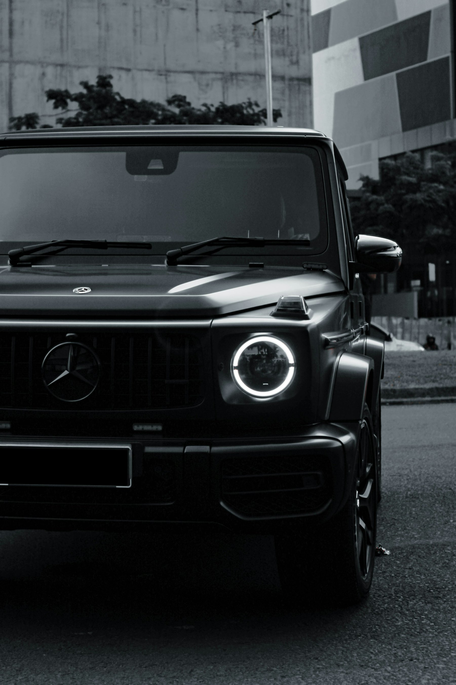

Details that survived every redesign.
When Mercedes-Benz rebuilt the G-Class from the ground up in 2018, almost every panel changed. These stayed, on purpose.
- Indicators on the fenders
- The turn signals sit on top of the front fenders, where the driver can see them over the flat hood.
- Exposed door hinges
- Bolted to the outside of the body, the way they were on the first military trucks.
- Push-button door handles
- A chrome button you press with your thumb, then the heavy door, then the sound.
- The lock sound
- Engineers kept the hard mechanical clack of the central locking, because it is part of how a G feels.
- Spare wheel on the tailgate
- Carried on a side-hinged rear door that swings open like a cupboard.